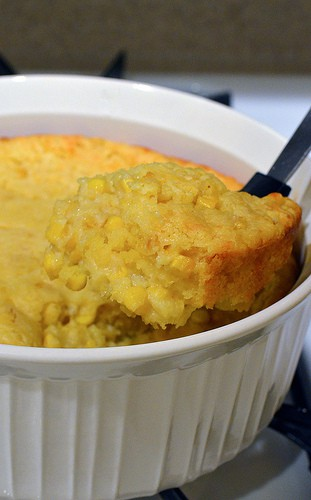

Corn Pudding

Description
Corn Pudding (sometimes called corn casserole) is a classic Southern comfort food. This particular recipe comes from my Great Aunt. Nowadays, my Mom makes it every year for Thanksgiving or Christmas -- or both if I'm lucky! It's a very simple recipe that scales up for larger groups easily.
Ingredients
- 1/4 C. granulated sugar
- 1 tbsp AP flour
- 1 tsp salt
- 2 C. corn (fresh, frozen, or canned)
- 2 lg or 3 md eggs
- 1 C. heavy cream
- 3 tbsp melted butter
Steps
- Preheat oven to 350º
- Mix together sugar, flour, and salt.
- Combine mixture with the corn, eggs, cream, and butter. Add in each ingredient slowly until all are stirred together. (If using frozen corn, mixture might be more difficult to combine)
- Pour into a buttered casserole dish and place on middle oven rack. Cook uncovered for about 45 minutes. Top should begin to get golden in color and center should be somewhat firm or jiggly. Don't want it runny.
- When removed from oven, let sit about 5 minutes.
Home